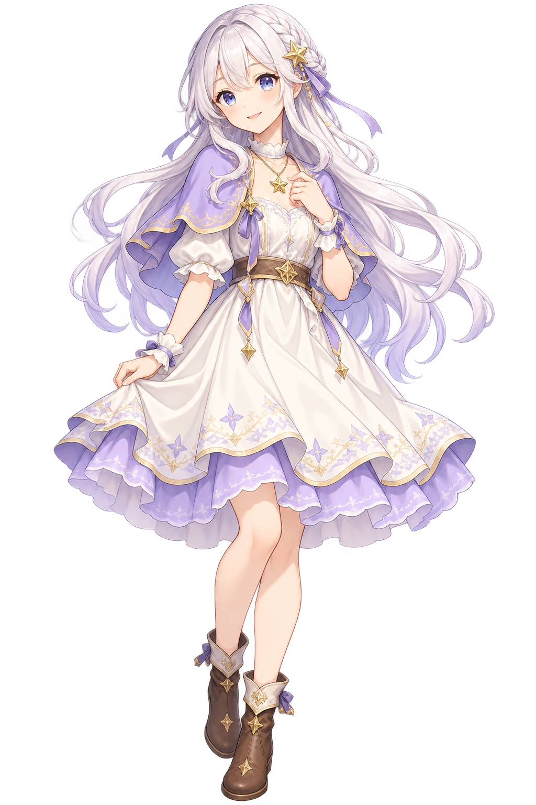

AOBEE RPG · STELLARIA
あおびーRPG
〜 星を忘れた世界 〜
忘れられることと、
存在しなかったことは違う。

序章 ＋ 第1章 ＋ 第2章 ＋ 第3章 ＋ 第4章 ＋ 第5章 ＋ 最終章 / v0.12.2 · クリア後の新しい毎日
PROLOGUE · STELLARIA
ほしの丘 ── 朝
序章ふたりの約束
星が、人々の思い出を記録する世界。
小さな村に、今日も朝が訪れる。
まだ、いつもと同じ朝。
↑ 北 ← 西 東 →ほしの丘
ルミナと、ほしの丘を歩こう
✦
行きたい場所をタップ
近くで調べる
CHAPTER I · MEMORY WOODS